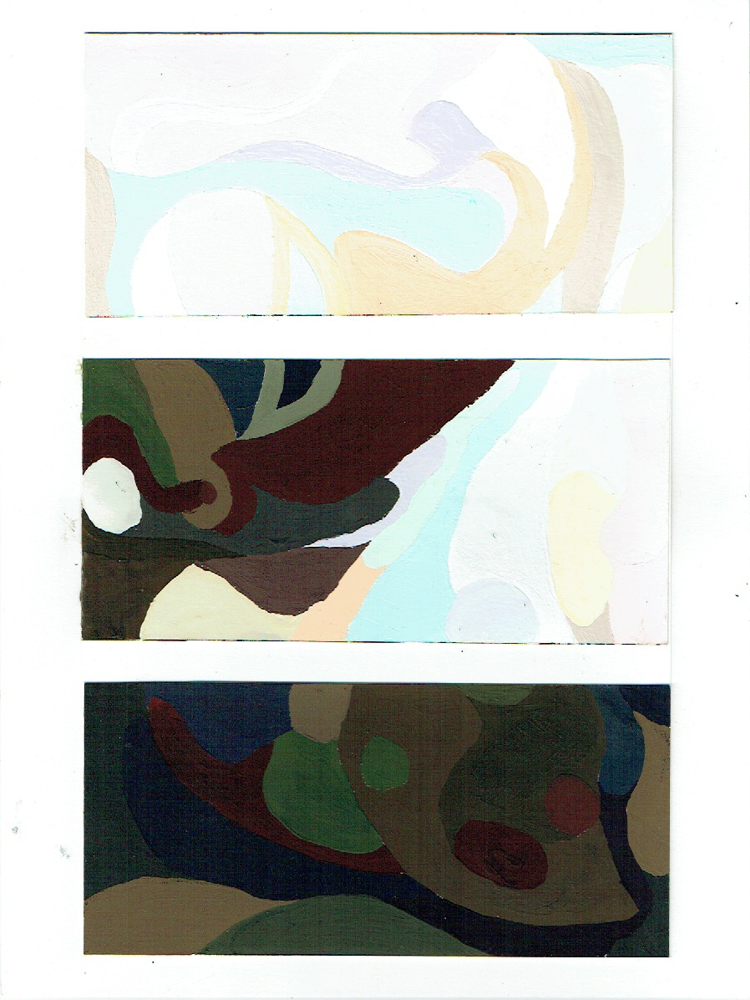
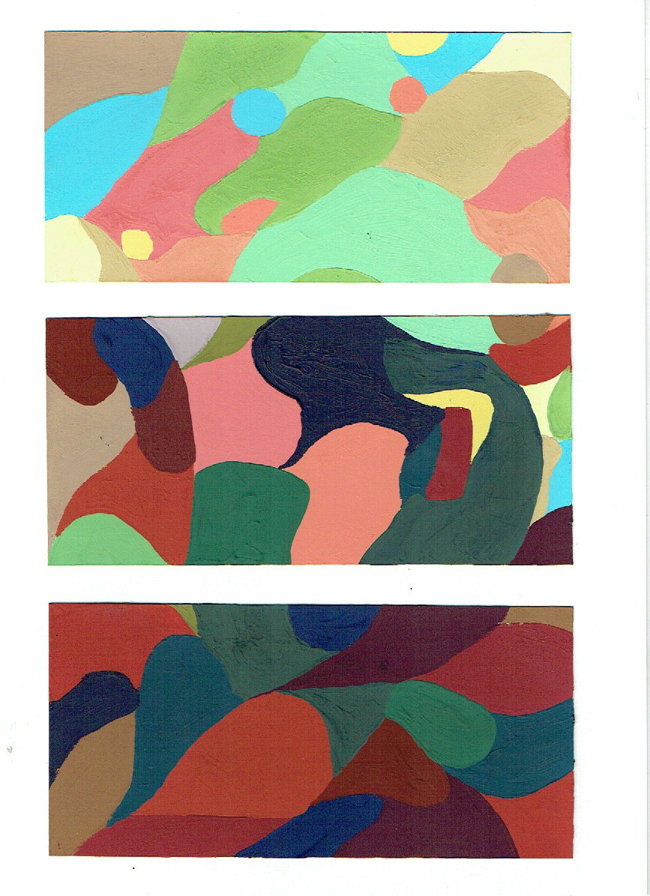
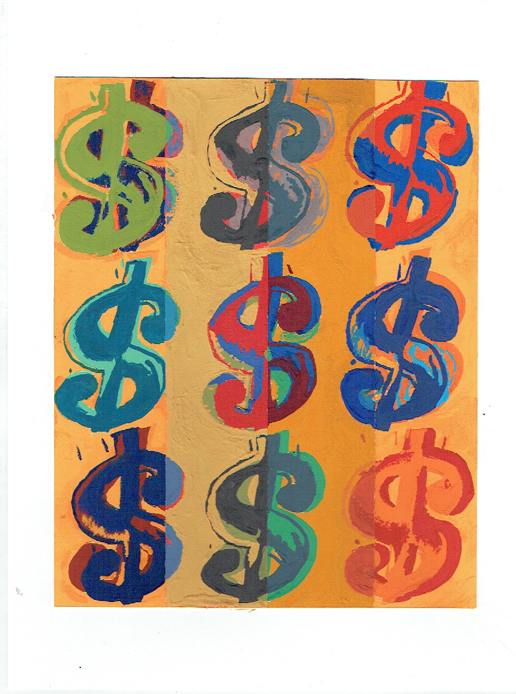
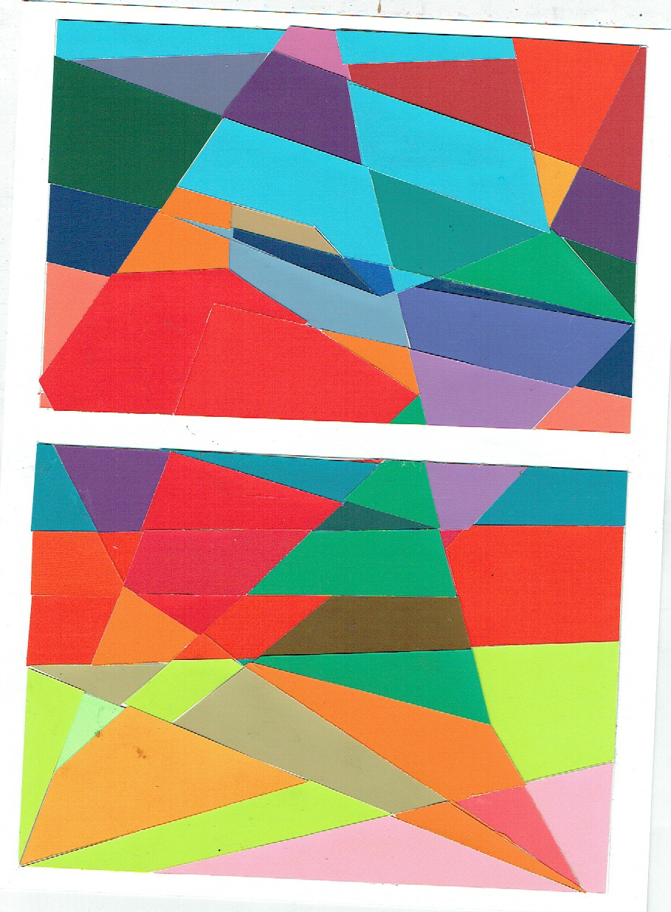
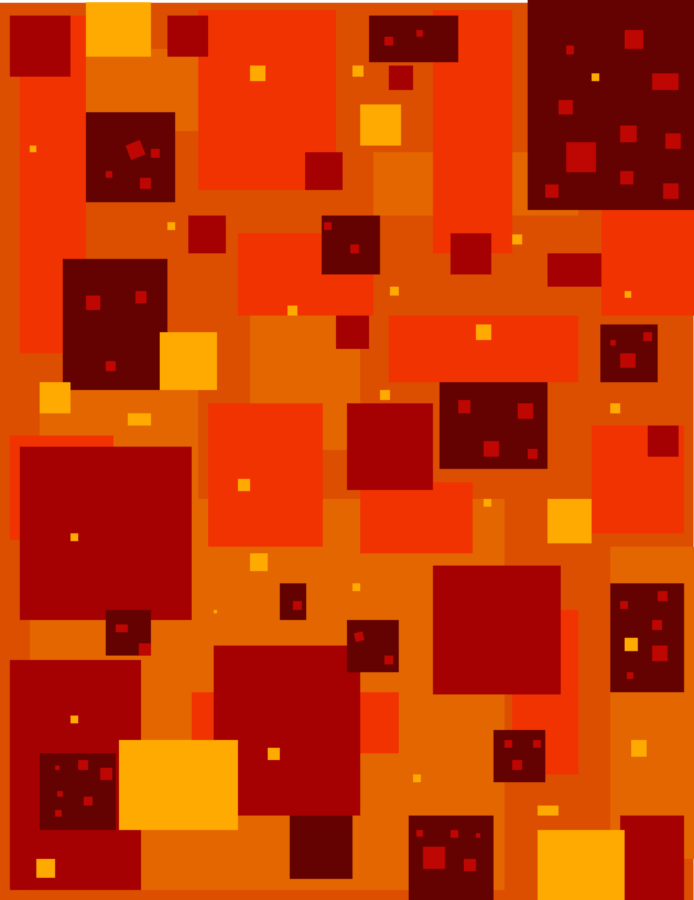
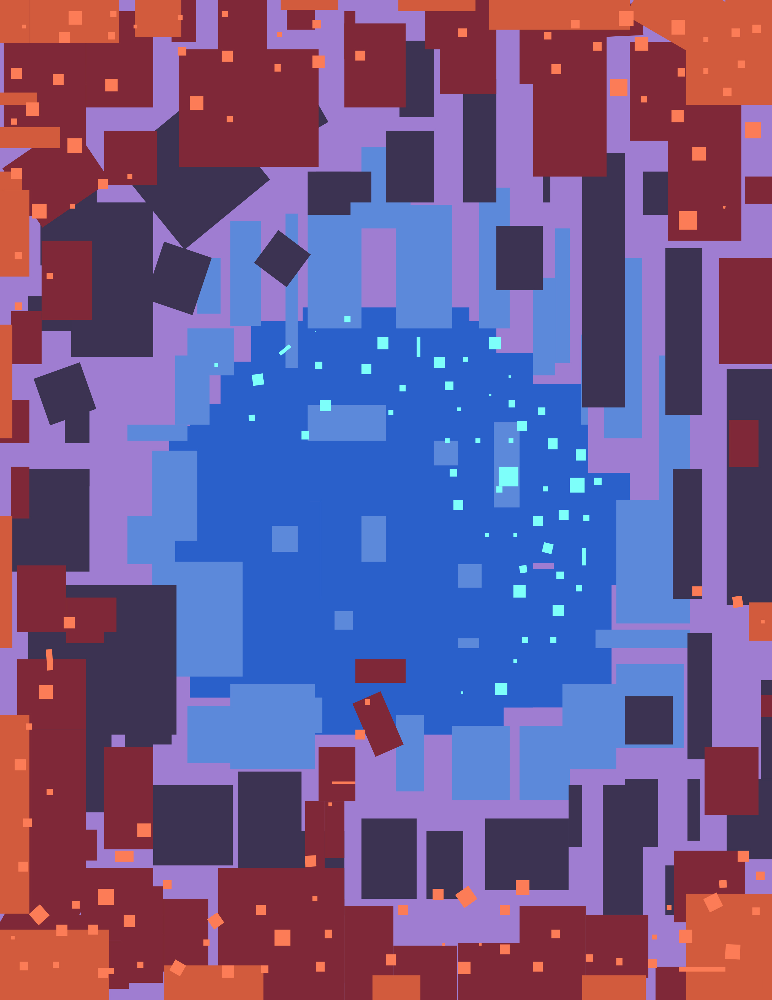
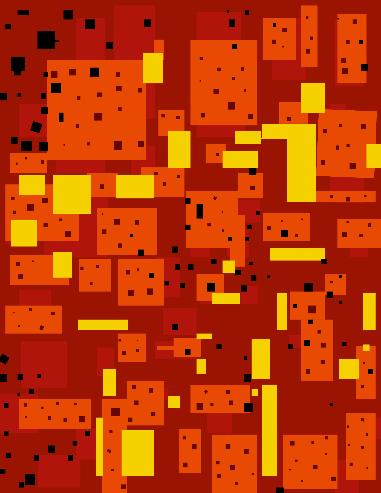
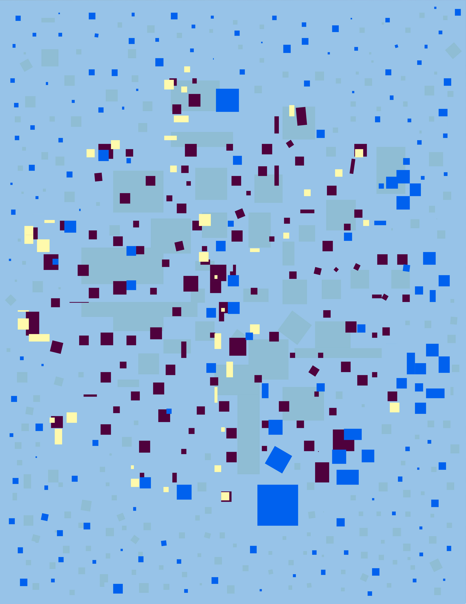

First project in this class working with gray scale and can you tell what I used? That’s right I used my neckless.
Going with the theme of mask our next assignment works around the idea of light and dark colors using this type of paint that I can’t remember now how sad.
All for one and one for all that is what I went for is simple same mask working with color.
Using an existing work of art and try to paint as close to it as possible and use some strips to change its color. That is what I tried to do at least.
Self-portrait time and break it up using planar analysis and a set color pallet
Paper that all I’m going to say, but I can’t. first of start with shape then have rays of light coming down and changing the color of the object that is what the project was supposed to be at least.
Part one of the seasons project and this one is Autumn
Part two of the seasons project and this one is Spring
Part three of the seasons project and this one is Summer
Part four of the seasons project and this one is Winter